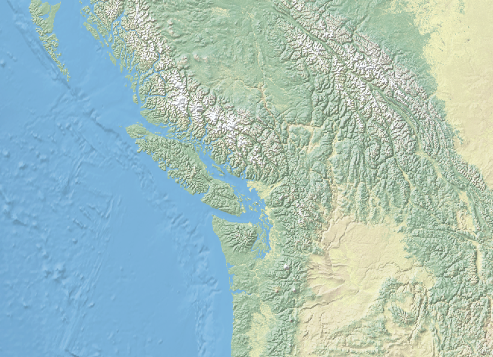

A Geographic Information System (GIS) works with data that is tied to a location on earth. This type of data is often referred to as GIS data, or geospatial data, and is spatially referenced to earth using location information – most commonly geographic coordinates. A GIS uses this location information to project a geospatial file into a virtual geographic space, where it can be visualized and analyzed in a spatial context.
Geospatial data is often referred to as having two main types: raster and vector. These two data types, while both geospatial, are very different from one another. Raster data is data which is made up of pixels arranged in a grid, whereas vector data is made up of vertices and the paths between them – creating geometries that represent real-world features or phenomena.
Vector data is made up of vertices and the paths between them – creating geometries that represent real-world features (such as a lake or street intersection) or phenomena (like a contour line indicating an elevation). There are 3 main types of geometries in GIS: points, lines, and polygons.
A geometry that is made of a single vertex (a point) is used to represent a single location, such as a city, tree, or address location. Point geometry consists of an x and y vertex (often a lat/long coordinate pair).
Two or more points connected by a path are lines. Lines are used to represent things like street centerlines, administrative boundaries, rivers, etc.
Polygons are three or more points connected by a path and closed to form an area. Polygons are used to represent areas like lakes, Canadian provinces, or parks.
Below is a map consisting of vector data, with cities (points), major roads (lines), land/water (areas), and parks (areas).
